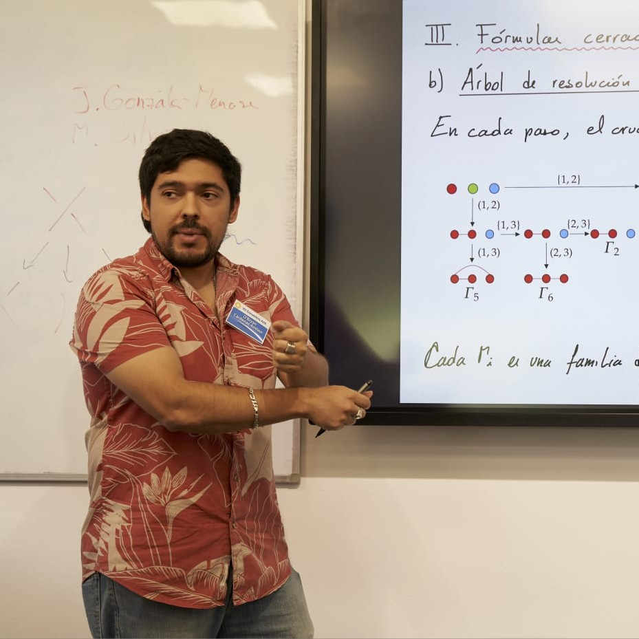

Mi investigación explora las conexiones entre la topología, el álgebra y la combinatoria a través de la teoría de nudos y sus generalizaciones.

Matemático, docente y divulgador
Matemático chileno, doctor en Matemáticas por la Universidad de Sevilla. Investigación en topología de baja dimensión.
Líneas de investigación y proyectos
Artículos publicados, aceptados y en preparación
Presentaciones seleccionadas
Cursos impartidos, minicursos y ayudantías
Lectura dirigida y proyectos de investigación formativa
Desde 2023 participo como tutor en el Programa Virtual de Lectura Dirigida "Pares Ordenados", acompañando proyectos de investigación formativa a estudiantes de universidades latinoamericanas en temas de teoría de nudos, grafos, juegos y algoritmos. Anteriormente, también participé en la supervisión y orientación de proyectos desarrollados en la asignatura Laboratorio de Modelación I de la Universidad Técnica Federico Santa María (UTFSM).
Matemáticas para todo el mundo
El matemático fuera del pizarrón
Notas, reflexiones y cosas que me gustaría compartir
Colaboraciones, consultas académicas o estudiantes de tesis
Estoy abierto a colaboraciones en investigación sobre teoría de nudos, enlaces ligados e invariantes de baja dimensión, así como a dirigir trabajos de pre y postgrado en estas áreas.